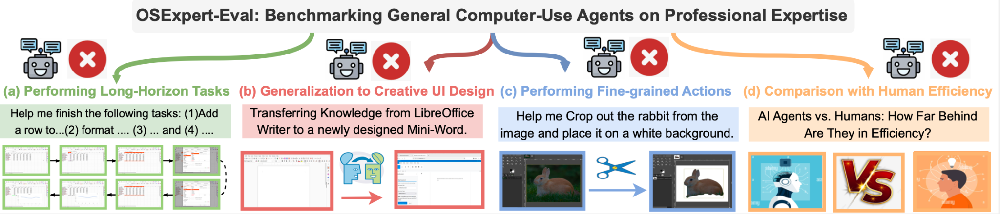
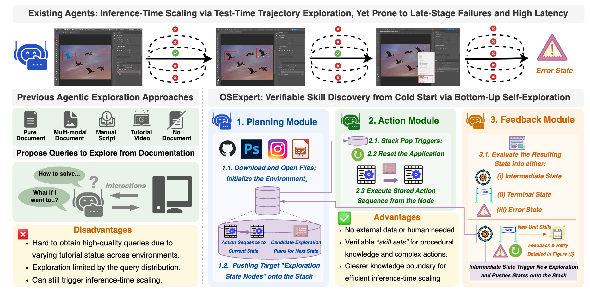
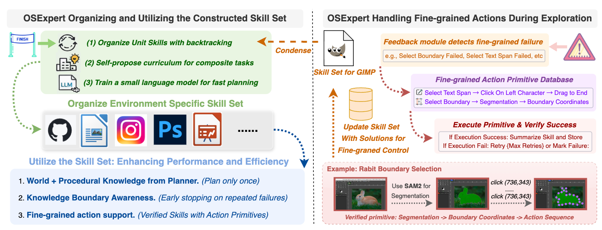
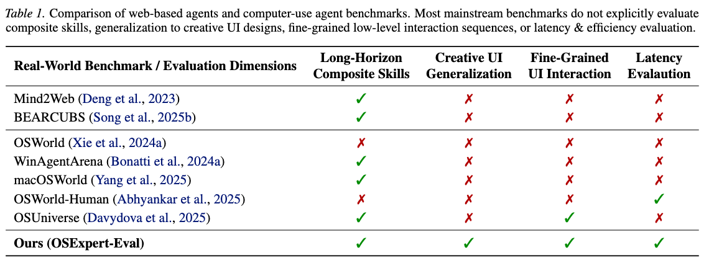
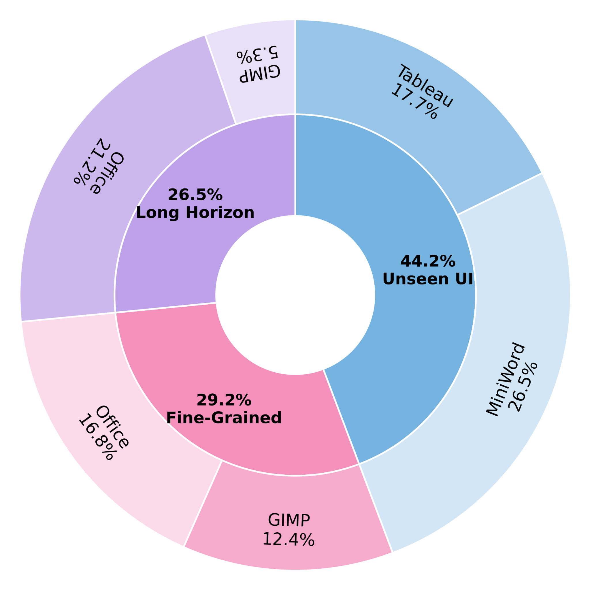

Motivation
Why do OpenClaw-style agents still fall short?
- Because their skills are still limited, shallow, and non-generalizable: they may solve familiar patterns, but break quickly once the query departs from what they have effectively seen before.
- OSExpert-Eval shows that even strong general-purpose agents remain trapped in test-time scaling and repeated trial-and-error, leading to slow inference, brittle trajectories, and late-stage failures.
- They still struggle to generalize to unseen or creative user interfaces, where superficial pattern matching is not enough to recover the right procedure.
- They also fail on fine-grained low-level actions, where reliable expert behavior depends on precise, reusable procedural skills rather than one-off guesses.
Stop manually annotating skills. Let the agent discover them.
- Instead of asking humans to handcraft an ever-growing library of workflows, OSExpert learns directly from the target environment through automatic LLM-driven exploration.
- The core idea is to replace static demonstrations with verifiable interaction: discover what actually works, keep what is validated, and discard what is not.
- This is why we introduce GUI-DFS: to systematically uncover reusable unit skills, expose capability boundaries, and make skill acquisition scalable.
- Once these skills are discovered, the agent can retrieve and compose them at inference time, solving the root problem rather than paying the same trial-and-error cost again and again.
OSExpert turns exploration into reusable professional skills.
- GUI-DFS exploration: systematically traverse the interface, discover unit functions, and retain only verified capabilities.
- Self-constructed curriculum: compose discovered unit skills into higher-level procedures that support long-horizon professional workflows.
- Fine-grained skill construction: invoke curated action primitives during exploration and keep only verified solutions for precise low-level control.
- Skill-aware efficient inference: plan once, execute with reusable procedural knowledge, and stop early with explicit skill-boundary checks.

Abstract
General-purpose computer-use agents have shown impressive performance across diverse digital environments. However, our new benchmark, OSExpert-Eval, indicates they remain far less helpful than human experts. Although inference-time scaling enables adaptation, these agents complete complex tasks inefficiently with degraded performance, transfer poorly to unseen UIs, and struggle with fine-grained action sequences. To solve the problem, we introduce a GUI-based depth-first search (GUI-DFS) exploration algorithm to comprehensively explore and verify an environment's unit functions. The agent then exploits compositionality between unit skills to self-construct a curriculum for composite tasks. To support fine-grained actions, we curate a database of action primitives for agents to discover during exploration; these are saved as a skill set once the exploration is complete. We use the learned skills to improve the agent's performance and efficiency by (1) enriching agents with ready-to-use procedural knowledge, allowing them to plan only once for long trajectories and generate accurate actions, and (2) enabling them to end inference-time scaling earlier by realizing their boundary of capabilities. Extensive experiments show that our environment-learned agent takes a meaningful step toward expert-level computer use, achieving a ∼20% performance gain on OSExpert-Eval and closing the efficiency gap to humans by ∼80%.


OSExpert-Eval Benchmark
Task categories
- Long-horizon compositional workflows
- Generalization to unseen and creative user interfaces
- Fine-grained low-level actions
- Execution efficiency
Scale
- 113 total tasks
- Long Horizon: 30 tasks
- Unseen UI: 50 tasks
- Fine-Grained: 33 tasks


OSExpert Method
OSExpert learns verifiable skills from bottom-up self-exploration and reuses them for robust, efficient inference.
- GUI-DFS exploration to discover and verify unit functions.
- Curriculum construction by composing unit skills into composite procedures.
- Fine-grained skill construction by invoking curated action primitives during exploration and retaining only verified solutions.
- Efficiency via single-pass fast planning and a skill-boundary check for early stopping.
Representative Task Examples
Each example includes the initialization state, the natural-language task instruction, and the ground-truth outcome.

Citation
If you use OSExpert or OSExpert-Eval, please cite:
@misc{liu2026osexpertcomputeruseagentslearning,
title={OSExpert: Computer-Use Agents Learning Professional Skills via Exploration},
author={Jiateng Liu and Zhenhailong Wang and Rushi Wang and Bingxuan Li and Jeonghwan Kim and Aditi Tiwari and Pengfei Yu and Denghui Zhang and Heng Ji},
year={2026},
eprint={2603.07978},
archivePrefix={arXiv},
primaryClass={cs.AI},
url={https://arxiv.org/abs/2603.07978},
}